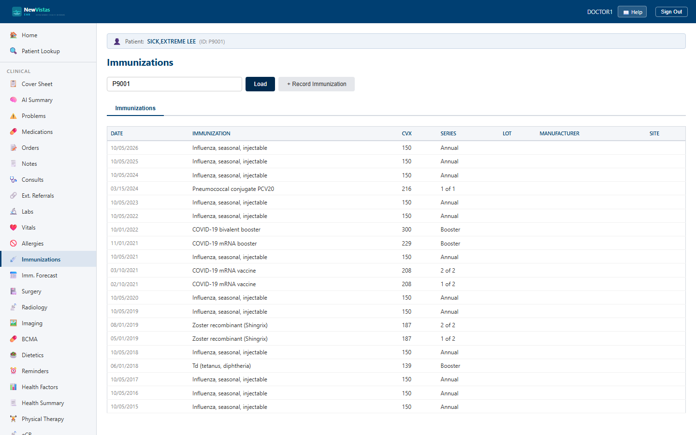

Immunizations
The Immunizations screen is where you review a patient's vaccination history, record a new immunization, and drill into a single dose to capture series, VIS, manufacturer, and registry details. It is the equivalent of the CPRS Immunizations tab.
Open Immunizations
- In the sidebar, click Immunizations (or go to
/immunizations). - In the Patient ID box, type the patient ID (e.g.
P9001) and click Load (or press Enter). If a patient is already in context, the list loads automatically.

What you see
The immunizations list
The body is a table of the patient's doses, showing Date, Immunization, CVX, Series, Lot, Manufacturer, and Site. Click any row to open the full detail for that dose. If there are none, an empty-state message is shown.
Recording an immunization
Click + Record Immunization to open the form. Enter the Immunization Name (required, e.g. Influenza Vaccine) and Date Given (required), plus optional CVX code, Series, Lot Number, Manufacturer, Administered By, Site, Route, Dose, Location, and Comments, then click Record.
The detail view
Opening a dose shows every recorded field and a set of sections for adding more:
- Series Information — dose number, doses in series, and whether the series is complete.
- Administration Details — site and route.
- Vaccine Information Statement (VIS) — dates offered and published.
- Vaccine Group and Manufacturer — name and code for each.
- Registry Status — Submitted / Accepted / Rejected / Pending.
- Mark as Historical — record an information source for an outside dose.
- Comments — add timestamped, attributed comments.